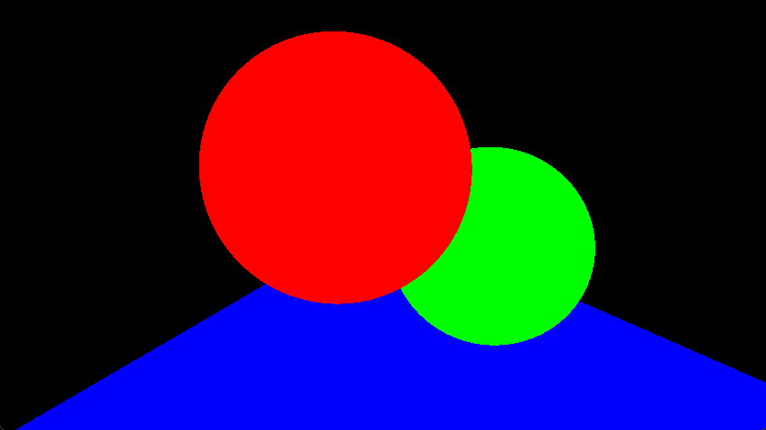
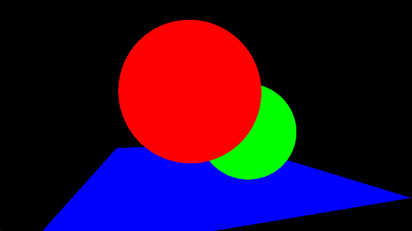
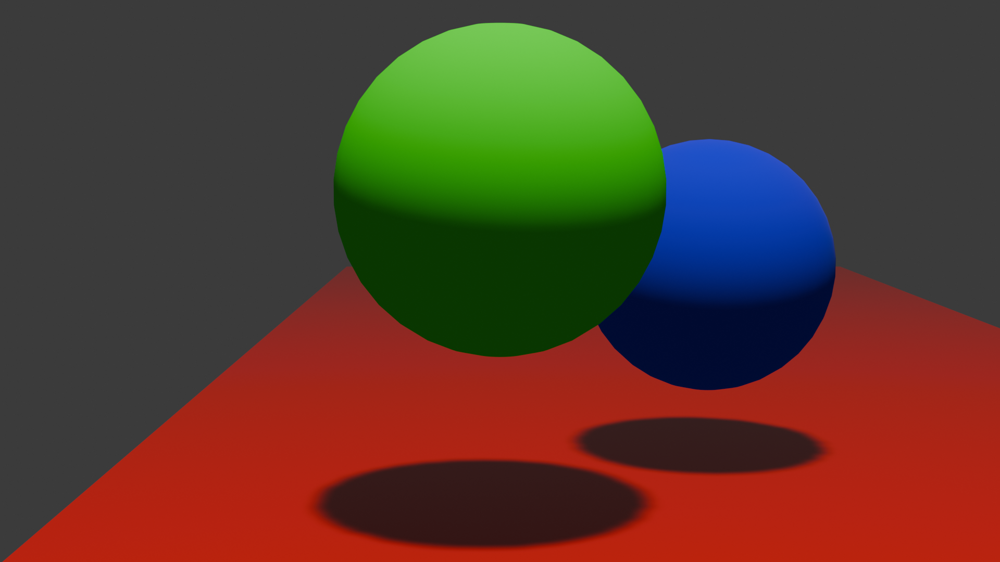

Assignment 2: Basic Raytracing

Extra: Moved camera to the left by 3 units and set look at to 5 units farther back on the z:

Initial Setup

Assignment 1: Scene Parameters
- Reflective Sphere: position = (0.45, 0.42, 1), size = (0.272, 0.272, 0.272)
- Transparent Sphere: position = (0, 0.6, 0.5), size = (0.298, 0.298, 0.298)
- Plane: position = (0.5, 0, 2.4), size = (3, 1.32, 1)
- Camera: position = (0, 0.7, -2), look at = (0, 0.49, 0)
- Light: position = (0.4, 7.8, -1)